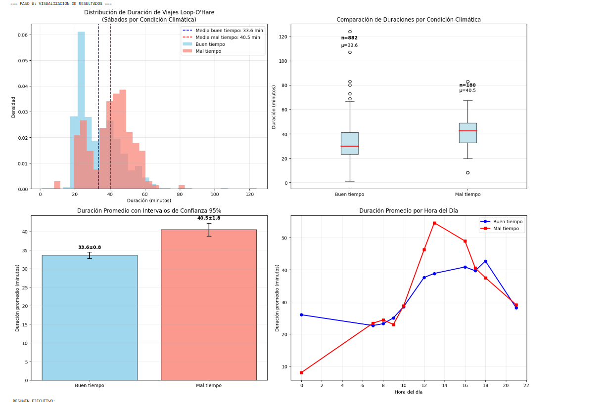
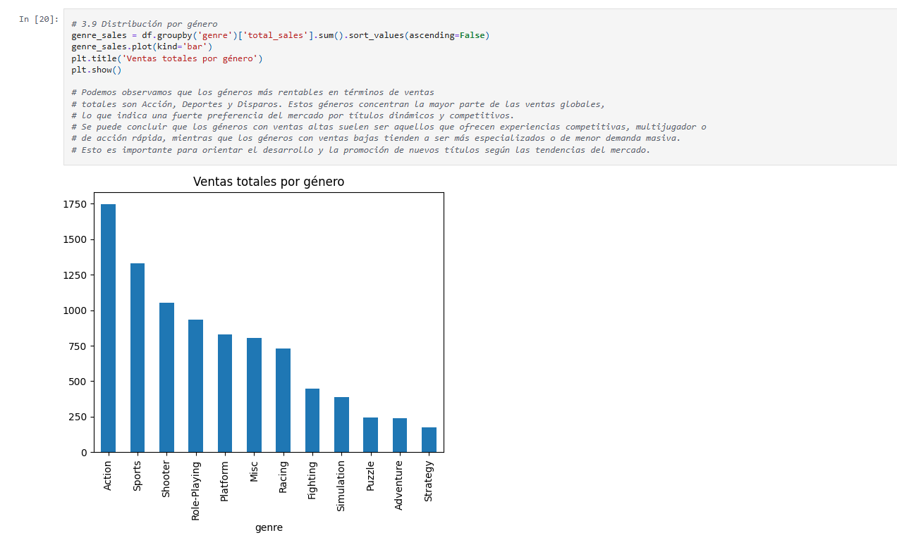

YouTube Trending Analysis (Tableau)

This project explored which video categories trended most often,
how trends were distributed across regions, and how U.S. category
behavior differed from other markets. I designed and published an
interactive Tableau Public dashboard with date, time, and country
filters, built both absolute and percentage trend views, and
standardized weekly insight delivery for non-technical stakeholders.
Using Tableau Public, SQL, EDA, and Git/GitHub, I confirmed that
trending behavior is region-specific and that localized advertising
strategies are more effective than one-size-fits-all approaches.
Tableau Public
Data Visualization
SQL
EDA
Git/GitHub
Open repository
Chicago Taxi Trip Analysis

This project analyzed Chicago taxi trip behavior to identify
operational patterns and validate weather-related effects on trip
duration. I queried and analyzed trip datasets to evaluate company
activity, destination concentration, and duration behavior, then
performed exploratory analysis and statistical hypothesis testing to
test whether rainy Saturdays impact Loop-to-O'Hare trip duration.
Using SQL, Python, Pandas, SciPy, and Jupyter Notebook, I found that
taxi activity is concentrated among top operators, destination demand
clusters around key neighborhoods, and rainy Saturday conditions are
associated with longer trip durations.
SQL
Python
Pandas
SciPy
Jupyter Notebook
Open repository
Video Game Sales Analysis

This project analyzed historical video game sales to identify factors
associated with commercial success across major regional markets. I
conducted end-to-end exploratory analysis across platforms, genres,
review variables, and geographies, cleaned and transformed raw data,
and evaluated performance patterns and relationships between review
scores and sales outcomes. Using Python, Pandas, NumPy, Matplotlib,
Seaborn, EDA workflows, Jupyter Notebook, and Git/GitHub, I found
that sales are concentrated in a subset of platforms and genres,
regional market behavior differs significantly, and review metrics
are most useful when interpreted together with platform, genre, and
market context.
Python
Pandas
NumPy
Matplotlib
Seaborn
EDA
Jupyter Notebook
Git/GitHub
Open repository